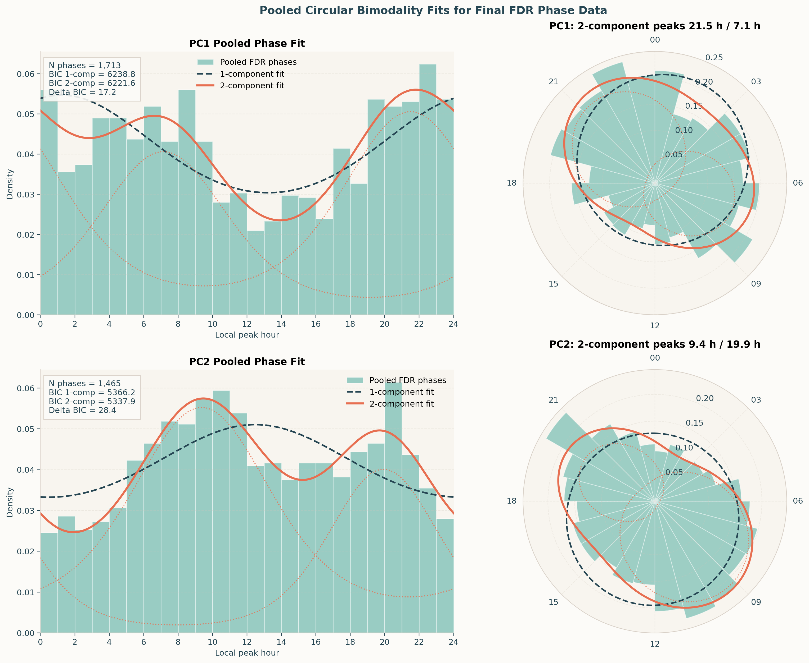
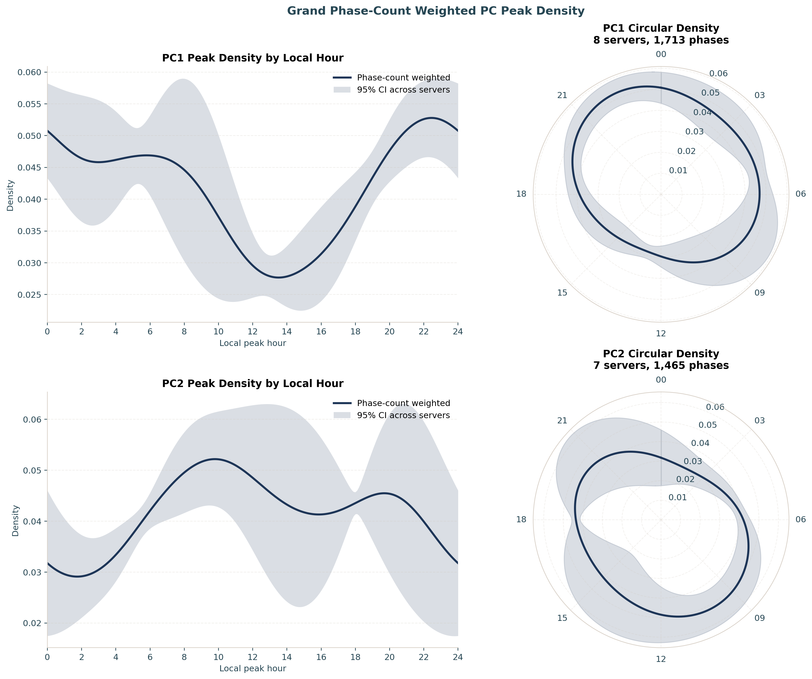
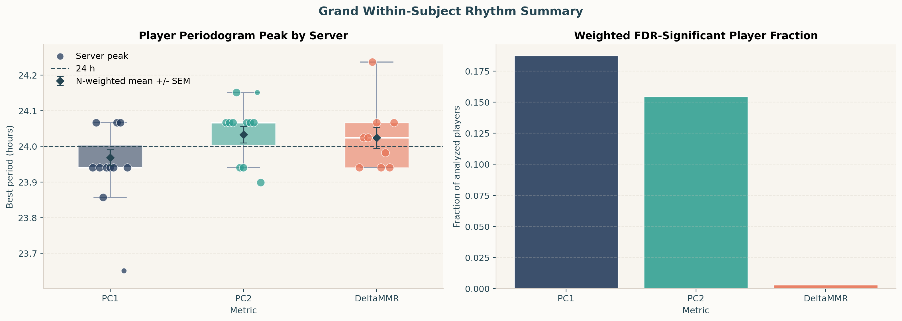
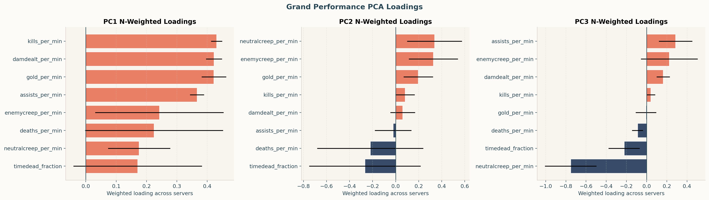
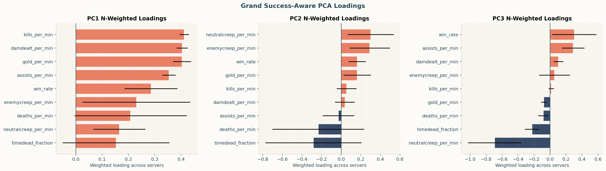
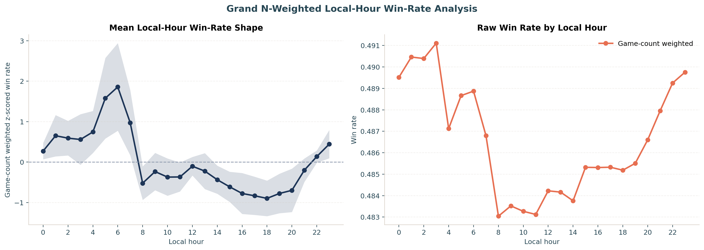

League of Legends Grand Rhythm Analysis
Final across-server analysis using N-aware weighting. The headline circular test pools FDR-significant player peak phases from server-metric cells with at least 20 significant phases.
Final bimodality result: PC1 and PC2 both prefer a two-component circular von Mises model by BIC in the pooled final data.
Pooled Circular Bimodality Fits
The histogram bars are the final pooled FDR-significant peak phases. The dashed curve is the one-component von Mises fit; the solid curve is the two-component mixture fit, with dotted component curves.

| metric | n_servers | n_phases | preferred | vm1_bic | vm2_bic | delta_bic_1_minus_2 | component_1_h | component_2_h | component_1_weight | component_2_weight |
|---|---|---|---|---|---|---|---|---|---|---|
| PC1 | 10 | 1878 | 2-component | 6859.998 | 6840.995 | 19.003 | 21.202 | 7.154 | 0.553 | 0.447 |
| PC2 | 8 | 1535 | 2-component | 5626.920 | 5593.177 | 33.744 | 9.316 | 19.894 | 0.646 | 0.354 |
Phase-Count Weighted PC Peak Density
This companion plot summarizes the same local-hour phase landscape with phase-count weighted smoothed circular densities.

| metric | n_servers | total_phases | weighted_peak_hour | weighted_density_peak | kappa | min_phases |
|---|---|---|---|---|---|---|
| PC1 | 10 | 1878 | 22.100 | 0.052 | 4.000 | 20 |
| PC2 | 8 | 1535 | 9.700 | 0.051 | 4.000 | 20 |
Weighted Rhythm and Phase Summaries

| metric | n_servers | weight_col | total_valid_players | weighted_best_period | weighted_sd_best_period | weighted_sem_best_period |
|---|---|---|---|---|---|---|
| PC1 | 11 | valid_players | 10043 | 23.968 | 0.071 | 0.022 |
| PC2 | 11 | valid_players | 10043 | 24.033 | 0.075 | 0.024 |
| DeltaMMR | 9 | valid_players | 9000 | 24.024 | 0.089 | 0.030 |
| metric | n_servers | weight_col | total_players_analyzed | total_fdr_significant | weighted_fdr_fraction |
|---|---|---|---|---|---|
| PC1 | 11 | players_analyzed | 10043 | 1880 | 0.187 |
| PC2 | 11 | players_analyzed | 10043 | 1551 | 0.154 |
| DeltaMMR | 11 | players_analyzed | 10043 | 31 | 0.003 |
Circular Model Preference Across Servers
| metric | n_servers | weight_col | total_fdr_significant | fit_servers | skipped_servers | preferred_1_component_phases | preferred_2_component_phases |
|---|---|---|---|---|---|---|---|
| PC1 | 11 | n_fdr_significant | 1880 | 10 | 1 | 985 | 893 |
| PC2 | 11 | n_fdr_significant | 1551 | 8 | 3 | 770 | 765 |
| DeltaMMR | 11 | n_fdr_significant | 31 | 0 | 11 | 0 | 0 |
Key N-Weighted Server Metrics
| metric | n_servers | weight_col | weight_sum | weighted_mean | weighted_sd | min | max |
|---|---|---|---|---|---|---|---|
| target_best_period | 11 | server_n_win_games | 101654115.000 | 18.164 | 6.026 | 7.008 | 24.048 |
| win_rate_best_period | 11 | server_n_win_games | 101654115.000 | 23.492 | 2.327 | 10.329 | 24.218 |
| performance_pc1_explained | 11 | server_n_win_games | 101654115.000 | 0.612 | 0.051 | 0.369 | 0.668 |
| performance_pc2_explained | 11 | server_n_win_games | 101654115.000 | 0.196 | 0.024 | 0.161 | 0.253 |
| performance_pc3_explained | 11 | server_n_win_games | 101654115.000 | 0.096 | 0.018 | 0.070 | 0.150 |
| success_pc1_win_rate_loading | 11 | server_n_win_games | 101654115.000 | 0.291 | 0.098 | 0.037 | 0.354 |
| success_pc2_win_rate_loading | 11 | server_n_win_games | 101654115.000 | 0.144 | 0.103 | -0.289 | 0.246 |
| success_pc3_win_rate_loading | 11 | server_n_win_games | 101654115.000 | 0.285 | 0.271 | -0.001 | 0.990 |
| pc1_phase_fdr_significant | 11 | pc1_phase_players | 10043.000 | 187.004 | 185.018 | 2.000 | 717.000 |
| pc2_phase_fdr_significant | 11 | pc2_phase_players | 10043.000 | 154.436 | 219.911 | 0.000 | 765.000 |
| deltammr_phase_fdr_significant | 11 | deltammr_phase_players | 10043.000 | 3.087 | 1.708 | 0.000 | 6.000 |
PCA Loading Summaries


Local-Hour Win Rate
